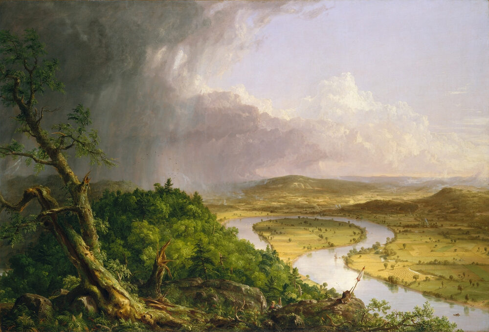
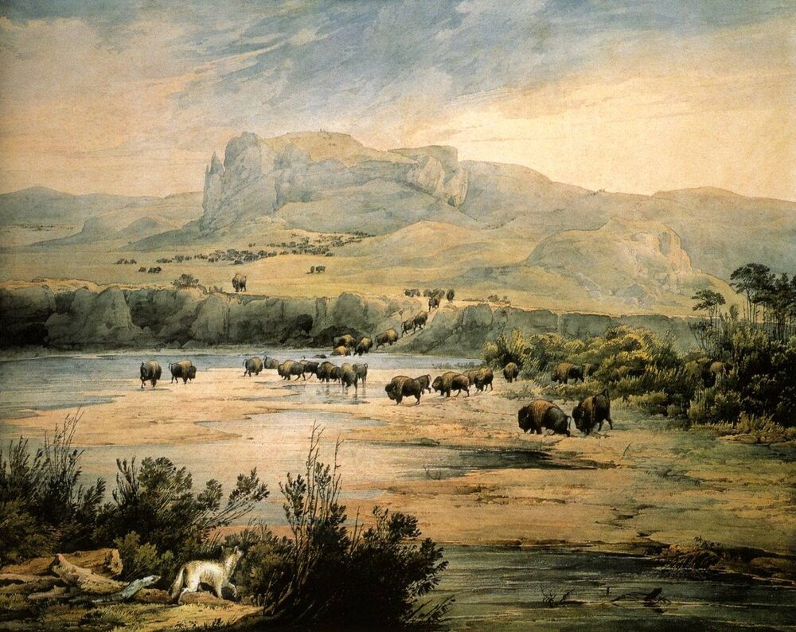

B2 · American Culture
The Text
Play the audio and follow along, then read it again on your own. Hover over a highlighted word to see what it means.
Listen & Read
A Country Made of Other Countries
The melting pot, the salad bowl, and why the metaphor you choose is an argument.
American culture is usually introduced with a metaphor, and the metaphor does more work than the sentence around it.
The old one is the melting pot. It comes from a 1908 play of that name, and it says that people arrive from everywhere, and what comes out is one new thing that is not quite any of the originals. It was meant generously. It also describes a process in which what you brought is expected to dissolve, which is why later writers proposed the salad bowl instead: everything in one dish, each ingredient still identifiable. Which image somebody reaches for tells you what they think immigrants owe the country they arrive in, and the argument between the two is not settled and is not really about food.

What is not in dispute is the ingredients. Native American nations were here first and their influence survives in names more than in anything else — more than half the states carry one. European settlement brought English law and language, and with them Irish, German, Italian, Polish and Scandinavian communities, each of which was treated as foreign on arrival and is now simply American, which is worth remembering whenever a newer group is described as impossible to absorb.

African American culture is the part most often understated and hardest to overstate. Almost every musical form the United States has exported — blues, jazz, gospel, rock and roll, soul, funk, hip hop — came out of Black American communities, usually in conditions of enforced poverty and legal exclusion, and was then adopted, commercialised and frequently credited elsewhere. You cannot describe American popular culture accurately without putting that at the centre of it, and a great deal of writing about the subject manages to avoid doing so.
Latin American influence is the largest current one and is not new: Spanish was spoken in what is now the United States before English was, and the oldest continuously occupied European settlement in the country was founded by Spain. Asian communities, arriving in significant numbers from the middle of the nineteenth century onward and again after 1965, have reshaped the food, the universities and the technology industry.
The pattern that repeats is worth naming. A group arrives and is regarded as unassimilable. Its food is considered strange, then becomes a novelty, then becomes ordinary, and eventually becomes so ordinary that people forget it came from anywhere. Pizza, bagels, tacos and fried chicken are all in that final category. Meanwhile the same arguments about the newest arrivals are made in almost the same words, by people whose own grandparents were the subject of them.
There are things that are genuinely shared. A written constitution treated with something close to reverence. A strong preference for the individual over the group, which produces both the ambition the country is admired for and the thinness of its safety net. An unusual comfort with self-invention — moving state, changing career, starting again — which is easier in a country where nobody's family has been in the same village for four hundred years. And a habit of talking about the nation in the language of principle rather than ancestry, which is what lets somebody become American in a way it is harder to become French or Japanese.
None of this makes it harmonious. A culture assembled this way argues constantly about who belongs, and the argument is not a sign that the system is broken. It is the system. The interesting question about the United States has never been whether it is unified, because it plainly is not. It is how something this various holds together at all, and the answer seems to be that the shared thing is not a background but a set of claims — which anybody can adopt, and which everybody can be held to.
Vocabulary
- melting pot — the image of many peoples fusing into one new people
- salad bowl — the rival image — many peoples in one country, each still distinct
- to dissolve — to disappear into something larger
- to reach for — to choose a word or idea instinctively
- to owe — to have an obligation to give
- in dispute — argued about; not agreed
- settler — somebody who moves to live in a new land
- to absorb — to take a group in and make it part of the whole
- to understate — to describe something as smaller than it is
- to overstate — to describe something as bigger than it is
- enforced — imposed by force or law, not chosen
- exclusion — being deliberately kept out
- to credit — to name somebody as the source of something
- unassimilable — supposedly impossible to absorb into a society
- novelty — something new and briefly fashionable
- reverence — deep respect, close to the religious
- safety net — the support a state gives people who fall on hard times
- self-invention — remaking who you are, by choice
- ancestry — the family and people you are descended from
- various — made of many different kinds
- to hold somebody to something — to insist they live up to what they claimed
Interactive Exercises
Practice
Complete each exercise, then click Submit to see your score and an explanation for every answer.
Speaking & Writing
Discussion
There are no right answers here — use these to practice speaking, or write a short answer to each.
- Melting pot or salad bowl — which image does your own country use about itself, and what does it imply?
- “The same arguments about the newest arrivals are made in almost the same words.” Is that true where you live?
- The writer says belonging by principle is easier to acquire than belonging by ancestry. Is that a strength or a weakness?
- “The argument is not a sign that the system is broken. It is the system.” Do you find that convincing?
- Write about 250 words on what somebody would have to accept in order to belong in your country, and whether that is a fair thing to ask.